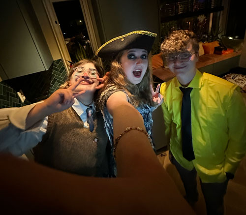
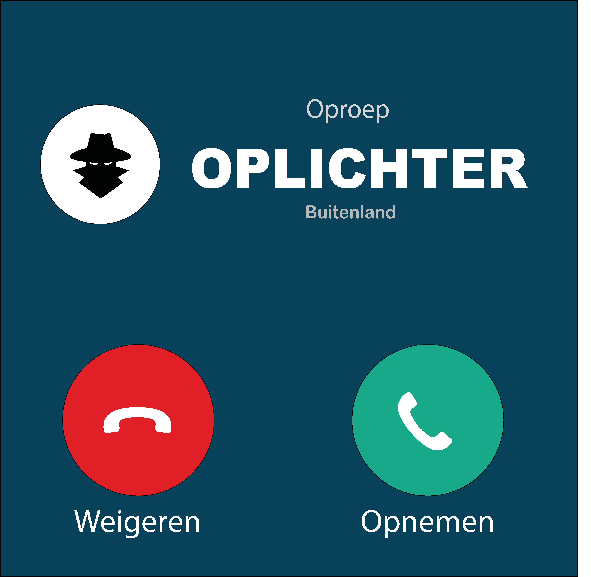

-
Hoe herken je een catfish? Waarom zeggen mensen gemenere dingen op het internet? Wat kan ik doen om niet gescamd te worden? Dit zijn allemaal vragen waar wij (Devin, Sarah en Nienke) antwoord op gaan geven. Wekelijks bespreken we steeds een verschillende onderwerp om je bewust te maken van de gevaren, zodat jij de volgende keer een verdacht mailtje kan herkennen of hoe je omgaat met cyberpesten. Pak een kop koffie (of energiedrank), en luister mee terwijl we het wereldwijde web een beetje veiliger proberen te maken!
Kortom: Mensen bewuster maken van de gevaren op het internet.
Wie wij zijn - 
Beluister de laatste aflevering
- 
-
Scammers en oplichters; hoe moet ik ze herkennen?! Aflevering 6 Het internet is een broedplaats voor oplichters. Van je gemiddelde marktplaats oplichter tot hele callcenters in India. In deze aflevering bespreken wij hoe je oplichters kan herkennen en gaan we diep in op de methodes die oplichters gebruiken. Lees meer
Beluister aflevering
Dit zijn wij
-

Sarah Pole
Hi ik ben Sarah, ik hou me op het internet vooral bezig met nieuwe game arts en animaties die aanvullen bij mijn interesses. Ook animatie YouTube videos vind ik helemaal de bom om te kijken en om van te leren. Naast me creatieve kant game ik ook veel en hou ik me bezig met populair internet related nieuws.
-

Devin van de Ketterij
Hoi, ik ben Devin uit Alkmaar! Als ik niet achter een simracestuur zit of een game aan het ontdekken ben, struin ik het internet af voor interessante weetjes over geschiedenis. Mijn research doe ik vooral via YouTube-video's en af en toe een goed artikel. Het internet is een geweldige bron van inspiratie – en laten we eerlijk zijn, ook een beetje verslavend.
-

Nienke Smit
Hey! Ik ben Nienke, als ik op het internet zit, dan kijk ik graag YouTube en leer daar ook graag nieuwe dingen van. Ook speel ik graag games, en toen ik jonger was ben ik er achter gekomen hoe belangrijk het is om onder andere op te letten wat je downloadt. Ook hou ik me graag bezig met schrijven of tekenen!